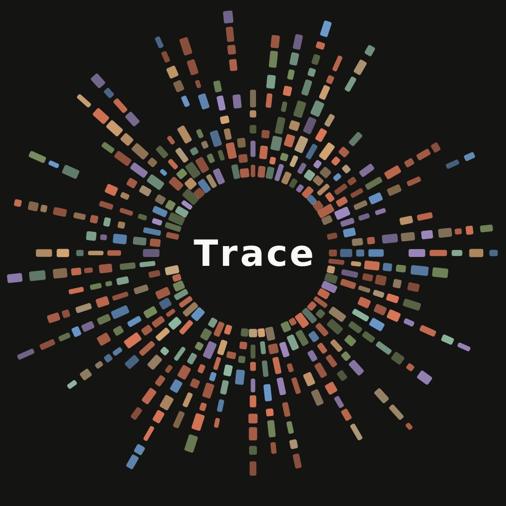

核心原则
不把复杂 AI 强塞进客户端，先保持捕捉链路可预测，并对齐 macOS 的写入一致性。

Trace Thought is leverage, Leave a trace.Product · Roadmap
Trace 的路线图围绕一个原则展开：先把痕迹留下来，再让这条痕迹在更多平台和规则里流动。
以下为当前公开路线图，实际细节会随发布继续修正。
不把复杂 AI 强塞进客户端，先保持捕捉链路可预测，并对齐 macOS 的写入一致性。
Win 公开版上线前，Daily 写入成功率需达到 99% 以上，且无数据丢失问题。